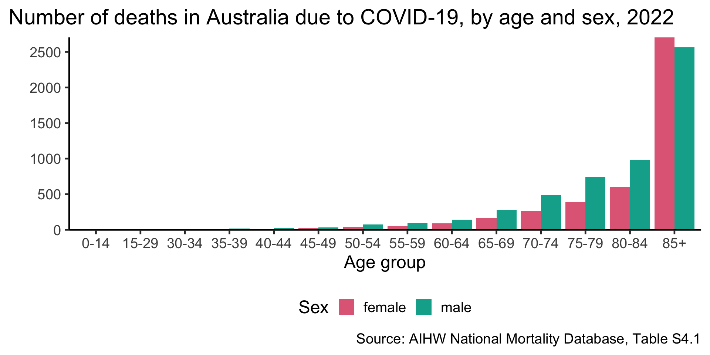
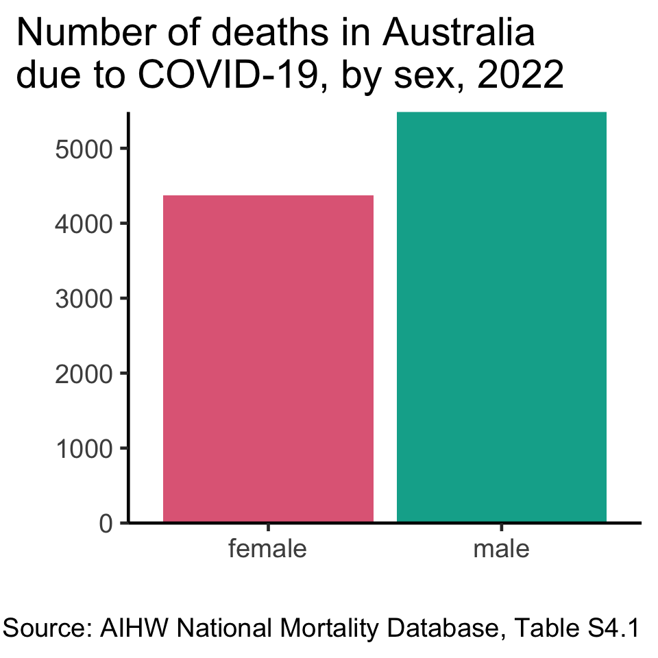
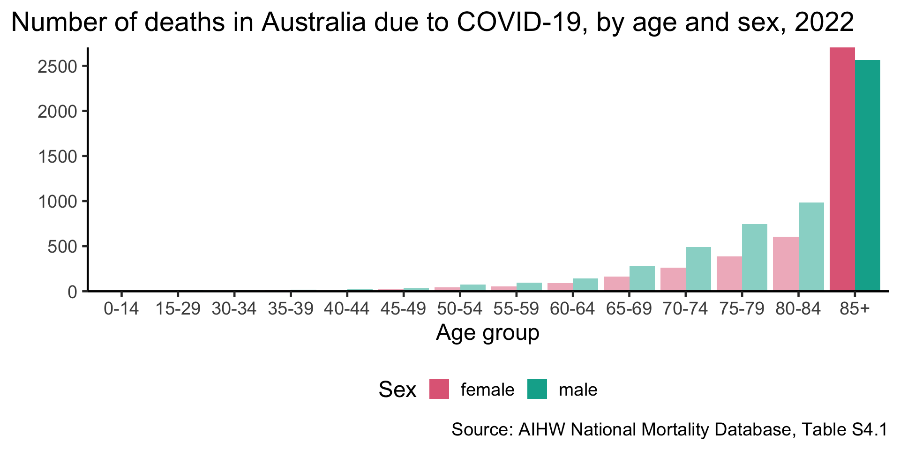
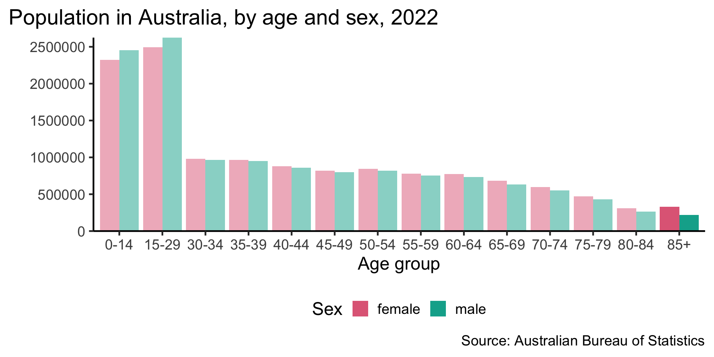
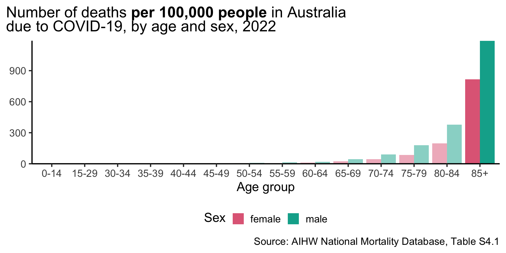
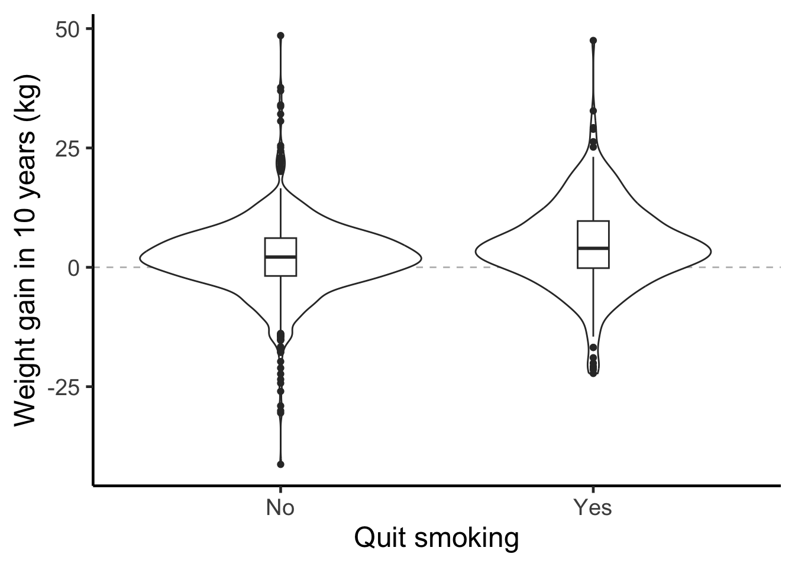
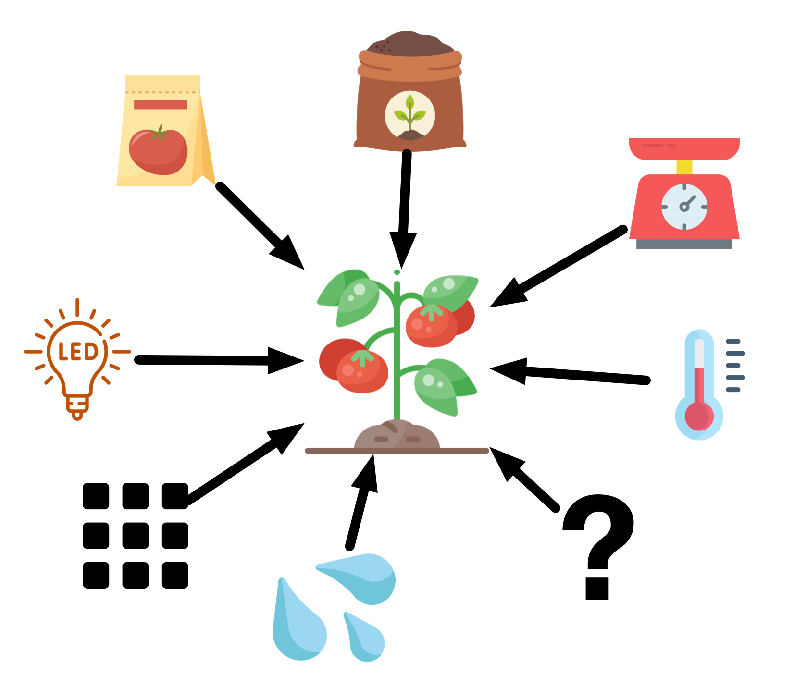
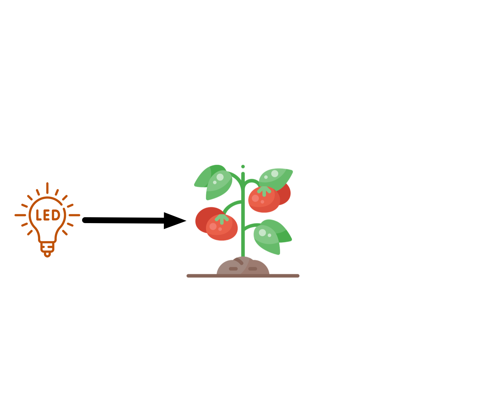
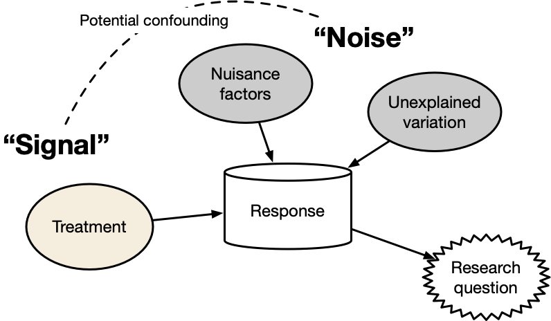

Statistical anatomy of experiments
ANU BDSI
workshop Design and Analysis of Experiments
Emi Tanaka
Biological Data Science Institute
17th September 2024
Materials
All materials will be hosted at
https://anu-bdsi.github.io/workshop-experimental-design/
Learning objectives
- Comprehend the differences between experimental and observational data
- Demonstrate proficiency in designing experiments, including defining research questions, selecting appropriate treatments or factors, and identifying potential sources of variation
- Understand the principles of experimental design, including randomization, control, replication, and blocking
- Understand the fundamental concepts of causal inference for experimental data
- Formulate a statistical analysis plan for the given experimental design
Current learning objective
- Comprehend the differences between experimental and observational data
- Demonstrate proficiency in designing experiments, including defining research questions, selecting appropriate treatments or factors, and identifying potential sources of variation
- -Understand the principles of experimental design, including randomization, control, replication, and blocking
- -Understand the fundamental concepts of causal inference for experimental data
- -Formulate a statistical analysis plan for the given experimental design
Data collection schemes
Experimental data
Observations of a carefully controlled system.
Observational data
Observations of a system without intervention or manipulation.
- There are quasi-experimental data that lie between experimental and observational data but we won’t cover these!
Case study: COVID-19
Claims
- Men are at a higher risk of death from COVID-19.
- Age determines the risks of death from COVID-19.
- Is this an experimental or observational study?
- How strong is the evidence for the claims?
Claim 1. Men are at a higher risk of COVID-19 death
- When making causal claims, the groups should differ only on the causal factor.

- But we have different age composition across sex for COVID-19 deaths.

- Why is the number of deaths lower for males over 85+ than females over 85+?
Claim 2. Age determines the risks of COVID-19 death
- Population size by age and sex are different


- The death rate increases as age increases regardless of sex so is the claim true?
- Correlation doesn’t imply causation!
- Many underlying health conditions, such as hypertension, is prevalent in elderly.
- It may be the combination of COVID-19 and other health conditions that is the causal factor of death.
Causal diagram
- We can use directed acyclic graphs (DAGs) to draw assumptions (below is a simplified DAG).
- These assumptions are almost always unverifable from the observational data alone.
- What’s more important is to think and be explicit about your assumptions about factors that may contribute to the outcome.
Case study Weight and smoking
Claim: Quitting smoking causes weight gain.

| Quit smoking | Mean | Std.Dev |
|---|---|---|
| No | 1.98 | 7.45 |
| Yes | 4.53 | 8.75 |
- This is an observational study.
- We observe whether a person quit smoking and their weight gain.
- Whether the person quit smoking or not is the exposure (variable of interest).
Draw your assumptions
Draw your assumptions
- This is a simplified version so it will fit nicely into the slide!
- Again, these assumptions are almost always unverifable from the observational data alone.
Adjusting for confounders
true effect confounded effect
- You want to find the true effect, but it may need to be adjusted for confounders for observational data
Experiments
- If we assess evidence for scientific claims, which type of data would be better? Experimental or observational?
- Experiments are the cornerstone of biological research.
- Experiments are essential to explore, understand or verify a phenomena or a hypothesis.
- Comparative experiments are experiments where the primary interest is to compare a (discrete) set of experimental conditions, referred to as treatments.
- Not all experiments are comparative, but many experiments in the biological sciences are.
Framing your research question
Question: Does regular exposure to red LED light enhances the growth of tomatoes?
- What is evidence for this?
- Higher plant height? At what time?
- Larger sizes of the tomatoes? Again when?
- Quicker time to flowering?
- Higher number of tomatoes harvested?
Question: Does regular exposure to red LED light enhance average dry weight of tomatoes at harvest due to its impact on the production of plant hormones?
- Framing of your research question can influence the design of your experiment!
- Formulate your research question with specific intention on how to measure evidence for or against it.
Brainstorm!
Question: Does regular exposure to red LED light enhance average dry weight of tomatoes at harvest due to its impact on the production of plant hormones?
- Should we record the dry weight of individual tomatoes or the average dry weight of all tomatoes harvested from each plant?
- What about recording plant hormones?
- What else can affect the outcome?
- Draw your causal diagram, particularly thinking about the domain context.


A statistical anatomy of a comparative experiment
- Experimental aim (your research question)
- Main outcome or response of interest
- Treatments: a set of experimental conditions
- Units:
- Experimental units: the smallest units that the treatment can be independently applied to
- Observational units: the smallest units for which the response is measured
- Blocking factors: other factors that can affect the outcome
- Design: the mapping of units to treatments (or allotment of treatments to units)
- A plan or layout is the design translated into actual units.

Example
Researchers are studying the impact of a new irrigation method on tomato growth. They randomly select 40 plants of the same species and divide them into two groups. One group is watered using the new irrigation technique, while the other group is watered using a traditional method. The researchers record the dry weight of each tomato at harvest.
- Aim: To assess the new irrigation method on tomato growth.
This aim should be more specific in practice. - Response: Dry weight of individual tomatoes at harvest.
- Treatments: New irrigation method vs. traditional method.
- Units:
- Experimental units: 40 plants of the same species.
- Observational units: Individual tomatoes.
- Design: Plants Irrigation treatment
Summary
- Experimental data are observations of a carefully controlled system.
- Observational data are observations of a system without intervention or manipulation.
- When making causal claims, the group should differ only in the treatment/exposure.
- Correlation doesn’t imply causation!
- Draw a causal diagram using a directed acyclic graph (DAG) to brainstorm and be explicit about your assumptions about the relationships between variables.
- Formulate the research question with specific intention on how to measure evidence for or against it.
- A statistical anatomy of a comparative experiment includes identifying the aim, response, treatments, units, design, and other factors that may influence the outcome.

anu-bdsi.github.io/workshop-experimental-design/